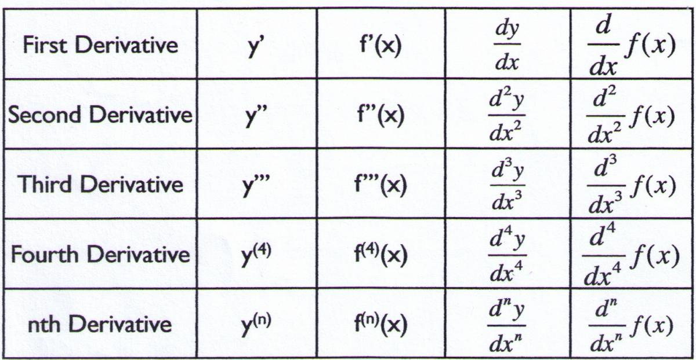
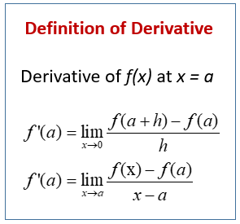

An easy way to think of a derivative is the change of rate.
For example, velocity is the change of position over time. Velocity is also the derivative of position.
A dervative can be represented with the apostrophe ( ' ) like in f '(x)
OR with


To find the velocity during a time interval you need to calculate the slope.
Take the change of position and divide it by the change of time.
From 0 to 1 seconds, the position remains at 20 meters. The average velocity during this interval
is 0 m/s.
From 1 to 3 seconds, the position increases from 20 meters to 60 meters. What is the average velocity during this period?
20 m/s
Power Rule
Tip: to take the derivative of a term like 5x2. First, mulitply the coeffecient by the exponent
(the exponent is 2 and the coeffecient is 5).
Then, subtract the exponent by 1. The derivative is 10x.
Power rule formula:
f(x) = Cxn f '(x) = (Cn)xn-1
C = coeffcient n = exponent
Example 1
f (x) = x2
f '(x) = 2x
Example 2
f (x) = 2x3
f '(x) = 6x2
Chain Rule
Here's another formula on how to take a derivative of a function (y' is the derivative of y).
Sometimes you will see a derivative problem use f(x) and g(x), OR f(u) and u
IF y = f(g(x)) THEN y' = f '(g(x)) × g'(x)
IF y = f(u) THEN y' = f '(u) × u'
5(x2 + 7)4
To solve this, first find what f(u) and u are. f(u)
are the terms outside the parentheses and u are the terms inside the parentheses.
In this case, f(u) = 5(u)4 and u = (x2 + 7)
f(u) = 5(u)4 f '(u) = ???
u = (x2 + 7) u' = ???
The next step is to take the dervative of f(u) and u, and then plug it into the equation:
y' = f '(u) × u'
Tip: the derivative of a constant number is 0. Visit the cheat sheet for more.


 Main
Main